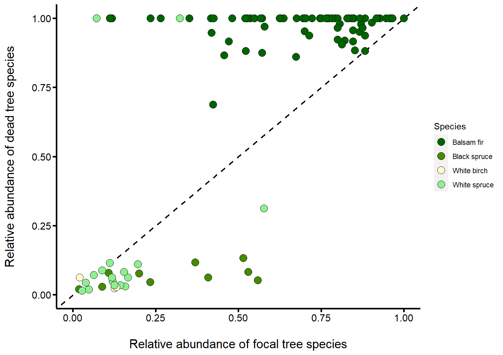

Welcome to the Living Data Tutorials
The project
The Living Data Tutorials (LDTs) were developed by graduate students in ecology and evolution during the spring of 2022 as part of the Canadian Institute of Ecology and Evolution’s (CIEE) Living Data Project (LDP). Our goal is to provide free and open-access teaching material in the form of online tutorials to undergraduate students in ecology and evolution.
All the tutorials make use of publicly available Canadian datasets to address specific topics in ecology and evolution. The following tutorial was built with the free and open-source R programming language using the leanr package. You can find the project folders and files in this GitHub repository.
We would like to thank Anne Cotton-Gagnon, MSc, and Christian Hébert, PhD, from Natural Resources Canada and the Laurentian Forestry Centre for their insights on the original datasets and access to the reports and maps associated with such.
Developers
The present tutorial was developed by Victoria Marie Glynn who is a PhD student at McGill University in Montréal, Québec, and Maxime Fraser Franco who is a PhD student at the Université du Québec à Montréal (UQAM) in Montréal, Québec.
Please feel free to contact us if you have any question :
Victoria Marie Glynn - victoria.glynn@mail.mcgill.ca
Maxime Fraser Franco - fraser_franco.maxime@courrier.uqam.ca

Tutorial objectives
By the end of this tutorial, you will be able to :
- Interpret community ecology plots.
- Differentiate between a generalist and specialist pest species, using community ecology plots.
- Make data-driven management recommendations.
The Anticosti Island tree dataset provides a unique opportunity for us to use real and historical data to gain skills in understanding what commonly made research plots, such as stacked bar plots, mean and how these figures can help us think more critically about natural resource management in Canada.
What we will explore
When you think of consumer-resource interactions, what comes to mind? Perhaps it is the emblematic hare and lynx example from the Hudson’s Bay Company pelt-trading dataset, or footage from nature documentaries that showcase lions hunting zebras. But consumer-resource interactions are often less conspicuous, and yet still strongly impact ecological communities. A great example are animals that consume plants as their main source of food (i.e. plant-herbivore interactions), such as insect pests and their plant prey. Insect pests are an important source of economic losses in the agricultural and forest industries. It is thus crucial that we understand the ecology of these insects if we want to minimize their damages and predict when and where they will strike.
Getting acquainted with our study system
In this tutorial, we are going to explore an instance of a predator-prey interaction between an insect and its tree hosts. We will investigate the case of a hemlooper looper (Lambdina fiscellaria) outbreak in Québec’s Anticosti Island in 1973. The hemlock looper is a moth pest that is found all across Canada, and parts of the USA, often as far south as the state of Georgia.
Meeting the hemlock looper
The hemlock looper is a voracious coniferous and deciduous plant pest. Native to North America and found in Eastern Canada and the United States, part of its destruction is linked to its life cycle. The moth lays its eggs on tree leaves, which upon hatching in June, the looper larvae proceeds to eat young leaves. As the larvae develops, it proceeds to move onto mature leaves. The larvae is often described as a “messy eater,” as it goes nipping from leaf to leaf. These chewed leaves then die and drop to the underlying under story.
After chewing away at a trees leaves, the looper larvae retreats into the cracks of the tree to become a pupate. In early-August, after 2-3 weeks of being a pupae, the larvae flutter away as an adult hemlock looper moth.
Comic illustrating the hemlock looper lifecycle, by Victoria Marie Glynn. The hemlock looper lays its eggs on coniferous and deciduous leaves (pink circles, left panel). When the eggs hatch, the larvae proceeds to eat the leaves on a branch (middle panel), moving throughout the tree chewing leaves; the chewed leaves eventually fall and die to the floor, killing the tree if the damage is sufficient (right panel).
Anticosti Island, Québec, shown as a blue pin on a map of Eastern Canada and Northeastern United States of America

Photograph of a hemlock looper larvae, Maine Forest Service, Forest Health & Monitoring, Slide Collection
What happened on Anticosti Island in 1973?
Since 1910, the hemlock looper has wreaked havoc in Québec’s forests. Between 1910 and 1975, these outbreaks caused an estimated 24 million cubic meters of forest to be lost in the province. Since then, additional outbreaks have occurred across Québec in places like Bas-Saint-Laurent, Gaspésie, and Anticosti Island.
Since the first outbreak, the Ministry of Forests, Wildlife and Parks of Québec (MFFP) and the Society for the Protection of Forests against Insects and Diseases (SOPFIM) have been monitoring hemlock looper outbreaks. The MFFP surveyed one of the most extensive tree mortality events due to a hemlock looper outbreak from 1971-1973. As the hemlock looper larvae usually attacks mature tree stands by eating their leaves, it causes them to appear yellow and red-brown in color, a tell-tale sign that an outbreak has occurred. Researchers often use this visual cue to assess degree of damage.

Severely defoliated balsam fir forest due to a hemlock looper outbreak, photograph by Dr. Luc Jobin
While the outbreak was occuring, in 1973 Dr. Luc Jobin from the Laurentian Forestry Centre, and his student Michel Chabot (then going onto becoming a forester in MFFP) went to Anticosti Island to visually survey the degree of damage that the hemlock looper was causing. In their data, openly hosted on the Government of Canada’s website, they denoted a tree as either being “Good,” meaning it did not show any signs of damage from the outbreak, “Dead” if the hemlock looper had attacked and killed the stand, and “Questionable” if they were unsure. This historical, and yet still very relevant dataset, allows us to think about the impact pest outbreaks have on ecological communities.

Map of Anticosti Island in 1973, during the hemlock looper outbreak, courtesy of Anne Cotton-Gagnon, MSc, Natural Resources Canada (CFS-LFC). The colors on the map represent the surveyed regions, with purple indicating severe defoliation, yellow indicating medium defoliation, and green indicating light defoliation. The red lines indicate the start of the one mile transect surveyed
Tutorial sections
With our Anticosti Island tree dataset, this tutorial will walk us through four sections in order for us to understand the impacts of the hemlock looper on Anticosti’s forests.
Following the 1973’s hemlock looper outbreak in Anticosti Island, we will:
Describe the tree community composition
Estimate the damage on the tree community
Evaluate if the hemlock looper preferentially attacks certain tree species
Based on 1-3, make management recommendations for coping with future outbreaks
At the end of each section, we will have a “Test your knowledge!” section before moving forward, as each section builds upon the next.
But before jumping into our tutorial, it is important we set up our coding session and explore our data. This is an important but often overlooked aspect of research – how and what data is gathered often drives the inferences we can make.
Setting up our coding session
Any R coding session requires that the user defines the packages required for data manipulation and analysis. Of course, before we can analyze any data, we also need to import it! This is what we are going to do in this section of the tutorial.
Let us start by loading the packages we will need for our analyses :
# To perform data manipulations
library(data.table)
library(dplyr)
# To produce nice plots
library(ggplot2)Then, we import the data in the current R session. To do so, we will directly access the data from the web server where it is hosted. This is a nice way of importing data because it does not require that we download it to our computer.
# Tree condition data URL paths
url_data_portal <- "https://open.canada.ca/data/en/dataset"
url_anticosti <- "9dda09b0-649f-4002-b207-7b204eb81cbb/resource/a1606235-95aa-4c81-a8db-19b852be288c"
csv_tree <- "download/anticosti_1973_trees.csv"
# Import the data and keep the columns we need
tree <- fread(file.path(url_data_portal, url_anticosti, csv_tree),
select = c("Block", "Compartment", "Plot",
"Cell", "Species", "Species_abbrev",
"Condition", "Number"))Data exploration
Exploring our data is a crucial step that needs to be done before attempting any analysis. In this section, we will perform some basic exploration procedures to help us understand the structure of our data.
Basic data information - Part I
The first thing we will do is to simply visualize the structure of our data. The tree dataset contains information about the tree community in 1973 following the hemlock looper outbreak. Let us visualize the data :
## [1] 1780As you can see, the tree dataset contains 8 variables (columns) and 1780 observations. The sampling design goes as follows :
- Block - the region where the trees were sampled
- Compartment - a section of the block
- Plot - 400 \(m^2\) plots nested within a compartment, which is the sampling unit
- Cell - multiple random cells were used per plot to sample the trees
- Species - name of the tree species that was identified
- Species_abbrev - a short name for the tree species
- Condition - condition of the tree that was identified (Dead, Questionable, or Good)
- Number - count of each tree species sampled in a cell
If you run the code above in your own R console, you will realize that it will not show the table as we see it here. However, you have multiple options to visualize your data directly in your console. Here are some examples.
Looking at the first 6 lines :
Listing the column names :
## [1] "Block" "Compartment" "Plot" "Cell"
## [5] "Species" "Species_abbrev" "Condition" "Number"Investigate the variable types :
## Classes 'data.table' and 'data.frame': 1780 obs. of 8 variables:
## $ Block : chr "Ge" "Ge" "Ge" "Ge" ...
## $ Compartment : chr "13C" "13C" "13C" "13C" ...
## $ Plot : int 1 1 1 1 1 1 1 1 1 1 ...
## $ Cell : int 1 1 2 4 4 5 5 6 6 7 ...
## $ Species : chr "Black spruce" "Balsam fir" "Balsam fir" "Black spruce" ...
## $ Species_abbrev: chr "EPN" "SAB" "SAB" "EPN" ...
## $ Condition : chr "Good" "Good" "Good" "Good" ...
## $ Number : int 1 4 1 10 6 6 1 7 1 6 ...
## - attr(*, ".internal.selfref")=<externalptr>Basic data information - Part II
We know that the column “Species” contains information about the tree species that were identified. It would be good to know which species were identified on Anticosti in 1973. To do so, we can simply run the following code :
## [1] "Aspen" "Balsam fir" "Black spruce" "Larch" "Pine"
## [6] "White birch" "White spruce"As you can see, there are 7 tree species. We can do the same thing to get a glimpse of the other categorical variables :
## [1] "Cap" "chaloupe" "Galiotte" "Ge"
## [5] "Jupiter" "NK" "Pavillon" "PE"
## [9] "Pn" "Riviere du cap" "Vaureal"## [1] "13B" "13C" "13D" "14G" "14H" "14R" "16H" "1E" "22G"
## [10] "22H" "23C" "2E" "3E" "3K" "8B" "CP3P" "cp4" "cp7"
## [19] "GE-1" "Ge-4" "Pv-5" "Pv12" "Pv15" "SP12G"## [1] "Dead" "Good" "Questionable"Minor adjustments to the data
In the previous code output, we saw that there was a species called “Larch”. We will change the name of the “Larch” species for “American larch”, since we know that only this species can be found on Anticosti Island. We do so by running the following code :
We also know that the column called “Number” indicates the number of trees of a given species that were counted in a cell. However, it is usually better to have individual counts, and not a summary of total counts per sampling unit. We will thus manipulate the “Number” column to extract the counts of each individual species as follows :
Visualizing our tidy dataset
As you will see, the “Number” variable is now always equal to 1 since we wanted all individual observations. Of course, the dataset now has more observations :
## [1] 4327We now have a good understanding of our data and are thus ready to move on and analyse it!
1. Describe the tree community
Our first objective is to characterize the tree community by gaining an overview of the tree species that were identified during the outbreak. To do so, we are going to plot the distribution of each tree species using a boxplot. This will provide us information on the abundances of each species and their variation across the island.
Preparing the boxplots
We will first need to further manipulate our data to create our boxplot. Here, we will create a simple table from our tree dataset. In this table, we will count the number of individuals per species that were sampled in each plot. Recall that each block represents a region of the island, and that compartments are sections of the blocks.
Since plots and compartments are independent from each other across the blocks, we need to take this into account in our calculations. We will thus have a unique count of tree species that were found in each plot sampled in a compartment of a given block. Here is the procedure :
# a. Compute the count of individuals per species in each plot
tree[, count_ind := sum(Number),
by = .(Species, Plot, Compartment, Block)]
# b. Keep only unique rows
# We filter out the "Condition" and "Cell" fields to ensure that rows are unique
boxplot_tab <- unique(tree[, !c("Condition","Cell")])We will then prepare a custom theme so that our boxplot looks nice. You can customize this theme as you wish.
# We then prepare a custom theme to have a nice plot
custom_theme <- theme(# axis values size
axis.text.x = element_text(face = "plain",
size = 12,
color = "black"),
axis.text.y = element_text(face = "plain",
size = 12,
color = "black"),
# axis ticks lenght
axis.ticks.length = unit(.15, "cm"),
# axis ticks width
axis.ticks = element_line(size = 0.90,
color = "black"),
# axis titles size
axis.title = element_text(size = 15,
face = "plain"),
plot.title = element_text(size = 17,
face = "plain"),
axis.line = element_line(size = 0.95),
#legend.position = "none",
panel.grid = element_blank(),
panel.background = element_blank())OK. We are now ready to go!
Let us plot our data
Now, we can create and visualize our boxplot :
ggplot(boxplot_tab,
aes(x = Species,
y = count_ind)) +
geom_boxplot(fill = "light green",
color = "black",
outlier.shape = NA) +
geom_jitter(shape = 16,
alpha = 0.3,
position = position_jitter(0.3)) +
xlab("Tree species\n") +
ylab("\nNumber of individual trees per plot") +
scale_y_continuous(breaks = seq(0, 100, 20)) +
custom_theme +
coord_flip()The boxplot shows the various tree species on the y-axis, and the x-axis represents the number of individual trees counted in each plot. Each grey circle in the figure represents the count in a plot, and gives us a view of the distribution of counts for each species. Recall that for a boxplot, the line in the center of the box represents the median number of individuals corresponding to a given tree species.
From this boxplot, we see that seven different tree species were identified, with their respective abbreviation from the dataset shown in parentheses :
- White birch - Betula papyrifera
- White spruce - Picea glauca
- Black spruce - Picea mariana
- American larch - Larix laricina
- Aspen - Populus spp.
- Pine - Pinus spp.
- Balsam fir - Abies balsamea

Tree species that were sampled on Anticosti Island. Photography credits are as follows: white birch - Bryant Olsen, white spruce - dmcdevit, black spruce - Treetime.ca, larch - Walter Siegmund, aspen - Diana Robinson, pine - Walter Siegmund, balsam fir - R. A. Nonenmacher
Let us test our knowledge!
From looking at the boxplot :
2. Estimate the damage on the trees
Knowing the distribution of the trees across the island and the most abundant species, we now need to assess the damage that was done by the outbreak. The scientists who sampled the individual trees assigned a damage state to each one of them. They assigned one of the three following states : “Good”, “Dead,” or “Questionable”. Hence, our second objective is to determine, for each species, the proportion of trees that were denoted as dead by the scientists. This should give us a general overview of the damage across the island.
Preparing the plot
To investigate the differences in damage among the tree species, we first need to calculate the proportion of each observed damage states per tree species. Similar to what we did before, we need to create a table from the tree dataset to plot our observations. Here, we count the number of damage states per tree species and then divide it by the total number of observed states :
Let us plot our data
We can now plot the proportion of damage for each tree species with the following commands :
ggplot(tree_damage,
aes(y = freq,
x = Species,
fill = Condition)) +
geom_bar(position = "stack",
stat = "identity",
color = "black") +
scale_fill_manual(values = c("plum", "light green", "khaki1")) +
ggtitle("Relative damage for each tree species") +
xlab("Tree specie\n") +
ylab ("\nProportion of damage") +
custom_theme +
coord_flip()Let us test our knowledge!
From looking at this plot :
New questions emerge
The two previous plots beg the following question: were hemlock loopers attacking balsam firs because they were more abundant on Anticosti Island, or because this is their preferred prey? In other words, is the hemlock looper a generalist or a specialist insect pest species?
Let us break this idea down :
- A species is a generalist if it can live in a variety of environments and eat a variety of foods, meaning it is quite flexible in terms of its diet and habitat requirements.
- A species is a specialist if it has a limited diet, and stricter habitat requirements, meaning it cannot live anywhere and cannot eat anything.
Two great examples are pigeons and koalas – pigeons live in a diversity of urban environments and are omnivores (eat plant and animal matter), while koalas only live on and eat eucalyptus.
Example of a specialist and generalist species. Photography credits: pigeon - Andrew Dunn, koala - Kévin Charpentier
With this in mind, let us continue our investigation to gain some further insights.
3. Evaluate the hemlock’s preferences
We have observed that balsam firs and black spruces were the most abundant tree species, but that their relative damage was largely different. This suggests that the hemlock looper may preferentially attack balsam firs, but we need to consider the relative abundance of each tree species to confirm this hypothesis. Let us convey this idea with a comic.
Imagine you are a hemlock looper about to lay its eggs. Wouldn’t it be most convenient to lay them on the first tree you find? In this case, the more abundant a tree is, the more likely it is to be predated upon.
Alternatively, perhaps hemlock loopers prefer a particular tree species because it has more tender leaves. In this case, even if this species was more rare in the forest, we would notice it has more hemlock looper damage than we would expect based on its relative abundance.

Comic on the role of relative abundance and pest prevalence, by Victoria Marie Glynn
How can we estimate specialization?
The comic we just saw suggests that we need to consider the relative abundance (%) of a given tree species, our x-axis or independent variable, as it relates to the relative prevalence (%) of trees that were denoted as “dead,” our y-axis or dependent variable, which is a proxy for predation pressure. With this in mind, we can create the following schematic to predict three possible scenarios.
These three scenarios are our hypotheses, as these are possible answers to our overall question - did the hemlock looper preferentially attack certain tree species?
For each hypothesis, we have a corresponding prediction, the outcome we would expect to see if our hypothesis is supported.
Making hypotheses and predictions before diving into data analysis is very useful, as it allows us to foresee and think through the dynamics represented in our dataset, improving our ability to interpret our results.

Three possible scenarios regarding the hemlock loopers’ predation behavior
Null hypothesis - The hemlock looper has no preference on what tree it predates upon – it is a generalist pest species:
- Prediction - We would see this on our graph as a one-to-one relationship (diagonal black line), where a tree species’ abundance in the forest is directly proportional to the number of trees from that species denoted as “dead.” This means that the trees with the highest abundance will also be the most attacked.
Hypothesis 1 - The hemlock looper prefers to predate upon some species versus others – it is a specialist pest species:
- Prediction - We would see this on our graph if a tree species’ points lie above the one-to-one line (orange triangle). This means that the hemlock looper attacks more trees of a given species (tree denoted as “dead”) even if the relative abundance of this species is low. This reflects that the looper is actively seeking out these three species.
Hypothesis 2 - The hemlock looper avoids some species, and thus these are less predated upon – it is a specialist pest species:
- Prediction - We would see this on our graph if a species’ points lie below the one-to-one line (blue triangle). This means that less individuals of a given tree species are attacked by the hemlock looper, even if their abundance relative to other species is high. This reflects that the looper is avoiding these tree species.
Testing our hypothesis
Let us plot our actual data and see where the results lie, in relationship to our guiding schematic above.
We’ll start by filtering out the “Questionable” tree status, as it is unclear if these trees will die as a result of the hemlock looper outbreak. Then, we will calculate the total abundance of tree species by plot, which were denoted as either “Dead” or “Alive.” With this, like we did before, we will be able to calculate the abundance of a given species relative to the abundance of all species within a plot.
# Filter out "Questionable" individuals
tree_filter <- tree[Condition != "Questionable",
.(Block, Compartment, Plot, Species, Condition, Number)]
# Calculate the number of individuals of each species for each plot
tree_filter[, ind_sp_plot := sum(Number),
by = .(Species, Plot, Compartment, Block)]
# Calculate the total abundance of individuals, irrespective of the species, in each plot
tree_filter[, total_id_plot := sum(unique(ind_sp_plot)),
by = .(Plot, Compartment, Block)]
# Calculate the relative abundance of each species in each plot
tree_filter[, rel_abund_plot := ind_sp_plot / total_id_plot]We then evaluate the count of “Dead” trees per species, relative to all individuals denoted as “Dead,” across all plots :
# Calculate the total count of "Dead" individuals by plot
tree_filter[Condition == "Dead",
total_dead := length(Condition),
by = .(Plot, Compartment, Block)]
# Calculate the number of "Dead" individuals per each species, for each plot
tree_filter[Condition == "Dead",
dead_sp_plot := length(Condition),
by = .(Species, Plot, Compartment, Block)]
# Calculate each species' "Dead" status relative to other species
tree_filter[Condition == "Dead",
prop_dead_plot := dead_sp_plot / total_dead,
by = .(Species, Plot, Compartment, Block)]
# Keep unique values with only "Dead" rows and use this table for plotting
tree_filter <- unique(tree_filter[Condition == "Dead",])We finish by plotting the relationship between tree species and being denoted as “Dead” :
ggplot(tree_filter,
aes(x = rel_abund_plot,
y = prop_dead_plot,
colour = Species)) +
geom_abline(intercept = 0,
slope = 1,
size = 0.8,
linetype = "dashed") +
geom_point(size = 4,
shape = 21,
aes(fill = Species)) +
scale_colour_manual(values = c("black","black", "black", "black")) +
scale_fill_manual(values = c("darkgreen", "chartreuse4", "lemonchiffon1", "lightgreen")) +
ylab("Abundance of dead trees relative to all dead trees\n") +
xlab("\nRelative abundance of focal tree species") +
scale_y_continuous(breaks = seq(0, 1, .25),
limits = c(0,1)) +
scale_x_continuous(breaks = seq(0, 1, .25),
limits = c(0,1)) +
custom_theme
Let us test our knowledge!
From the graph and based on our predictions above, we can now answer the question :
4. Management recomendations
What do our findings imply in terms of hemlock looper management, within and outside Anticosti Island?
This dataset represents one of the many hemlock looper outbreaks Anticosti Island, and Québec as a whole, has experienced. However, similar outbreaks have been seen across Canada, such as in Vancouver. Please see the three videos below regarding how different provinces are managing the hemlock looper. While watching the videos consider the following questions:
- What factors naturally control the hemlock looper population?
- What environmental factor(s) may be exacerbating a hemlock looper outbreak in a forest?
- What management intervention strategies are typically implemented?
Hemlock looper moths killing Stanley Park trees in Vancouver, British Columbia
Looper Moth Natural Cycle in Metro Vancouver, British Columbia
Extent of damage due to the hemlock looper in Metro Vancouver, British Columbia
After watching these videos and reflecting on the insights from the Anticosti dataset (hint: think about relative tree mortality, the hemlock looper’s life cycle), provide one management strategy that Metro Vancouver could implement this year if they have another looper outbreak. Submit this below as a PDF document (250 words max).
How do we manage a moth that is native to Canada?
As the videos highlighting the outbreak in British Columbia present, there is no one “right answer” to pest management, as it should be an integrative, collaborative, and ever-evolving endeavor. However, having data to drive these decisions is a powerful tool :
Although our data indicates that on Anticosti Island, the hemlock looper had a preference for balsam fir in 1973, this is not its only or main host. By directing management initiatives towards a single tree species, this may cause other equally-liked trees to be even more strongly attacked – this is a delicate balance to strike. Likewise, this dataset is from the 20th century – would you foresee consumer-resource dynamics in Anticosti Island to have changed since?
Adding a biological agent, like the fungi Entomophthora or bacteria Bacillus thuringiensis kurstaki (Btk) to control hemlock looper seems like a sensible option. Perhaps you think this is better than spraying a chemical insecticide. But biological agents are controversial, as they can often have unintended consequences, impacting species you did not wish to target. See this wonderful paper that delves into this topic further.
Prevention is often be more effective than intervention. Understanding the hemlock looper’s life history is a critical component here – we know the larvae prefer certain species and more mature tree stands. We can promote forests of a certain age and species composition, and evenly spread out tree stands, to reduce the probability of a hemlock looper outbreak in the future.
With all management initiatives, it is important to consult the local community and have them integrally involved in the process, such as the Innu community on the North Shore. Asking them what the want the forest to look like and what they need, and not making these assumptions, can help insure that pest management initiatives are ethical, sustainable, and as such, a success.
Hemlock looper outbreaks are cyclical in nature, and may in and of themselves be necessary for forest health, taking the regenerative role of fire disturbance in many places. Although epidemic outbreaks can be quite devastating, some tree mortality may actually be beneficial for a tree stand’s long-term health.
Main takeaways
As our Anticosti Island tree dataset underscores, historical data is a powerful tool to help us best contextualize current management concerns, and assist us in making data-driven decisions.
From our tutorial, you have :
Interpreted community ecology plots, to understand the tree community present on Anticosti Island in 1973, and how different species were impacted by the hemlock looper outbreak.
Differentiated between a generalist and specialist pest species, using community ecology plots, by connecting how the relative abundance of a given tree species is linked to the prevalence of a tree being denoted as “Dead.”
Made data-driven management recommendations, considering not only the data presented in the tutorial, but also looking further into the biology of the hemlock looper, what already established strategies exist, and thinking critically about the link between society and the environment.
Together, this tutorial underscores that historical data is useful, but also that many considerations need to be taken into account for modern pest management.